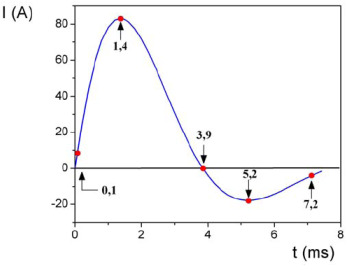
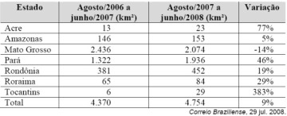

QUESTÃO 01
Um carpinteiro fabrica portas retangulares maciças, feitas de um mesmo material. Por ter recebido de seus clientes pedidos de portas mais altas, aumentou sua altura em 1/8, preservando suas espessuras. A fim de manter o custo com o material de cada porta, precisou reduzir a largura.
A razão entre a largura da nova porta e a largura da porta anterior é
a) 1/8
b) 7/8
c) 8/7
d) 8/9
e) 9/8
QUESTÃO 02
De acordo com a ONU, da água utilizada diariamente,
25% são para tomar banho, lavar as mãos e escovar os dentes.
33% são utilizados em descarga de banheiro.
27% são para cozinhar e beber.
15% são para demais atividades.
Atividade
Consumo total de água na atividade (em litros)
Tomar banho
24,0
Dar descarga
18,0
Lavar as mãos
3,2
Escovar os dentes
2,4
Beber e cozinhar
22,0
Se cada brasileiro adotar o consumo de água indicado no quadro, mantendo o mesmo consumo nas demais atividades, então economizará diariamente, em média, em litros de água,
a) 30,0
b) 69,6
c) 100,4
d) 130,4
e) 170,0
QUESTÃO 03
A tecnologia do LED é bem diferente das lâmpadas incandescentes e das fluorescentes. A lâmpada LED é fabricada com material semicondutor semelhante ao usado nos chips de computador. Quando percorrido por uma corrente elétrica, ele emite luz. O resultado é uma peça muito menor, que consome menos energia e tem uma durabilidade maior. Enquanto uma lâmpada comum tem vida útil de 1.000 horas e uma fluorescente de 10.000 horas, a LED rende entre 20.000 e 100.000 horas de uso ininterrupto. Há um problema, contudo: a lâmpada LED ainda custa mais caro, apesar de seu preço cair pela metade a cada dois anos. Essa tecnologia não está se tornando apenas mais barata. Está também mais eficiente, iluminando mais com a mesma quantidade de energia. Uma lâmpada incandescente converte em luz apenas 5% da energia elétrica que consome. As lâmpadas LED convertem até 40%. Essa diminuição no desperdício de energia traz benefícios evidentes ao meio ambiente.
Considerando que a lâmpada LED rende 100 mil horas, a escala de tempo que melhor reflete a duração dessa lâmpada é o:
a) dia
b) ano
c) decênio
d) século
e) milênio
QUESTÃO 04
Um desfibrilador é um equipamento utilizado em pacientes durante parada cardiorrespiratória com objetivo de restabelecer ou reorganizar o ritmo cardíaco. O seu funcionamento consiste em aplicar uma corrente elétrica intensa na parede torácica do paciente em um intervalo de tempo da ordem de milissegundos.
O gráfico seguinte representa, de forma genérica, o comportamento da corrente aplicada no peito dos pacientes em função do tempo.

De acordo com o gráfico, a contar do instante em que se inicia o pulso elétrico, a corrente elétrica inverte o seu sentido após
a) 0,1 ms
b) 1,4 ms
c) 3,9 ms
d) 5,2 ms
e) 7,2 ms
QUESTÃO 05
A cada ano, a Amazônia Legal perde, em média, 0,5% de suas florestas. O percentual parece pequeno, mas equivale a uma área de quase 5 mil quilômetros quadrados. Os cálculos feitos pelo Instituto do Homem e do Meio Ambiente da Amazônia (Imazon) apontam um crescimento de 23% na taxa de destruição da mata em junho de 2008, quando comparado ao mesmo mês do ano 2007. Aproximadamente 612 quilômetros quadrados de floresta foram cortados ou queimados em quatro semanas. Nesse ritmo, um hectare e meio (15 mil metros quadrados ou pouco mais de um campo de futebol) da maior floresta tropical do planeta é destruído a cada minuto. A tabela abaixo mostra dados das áreas destruídas em alguns Estados brasileiros.

Supondo a manutenção desse ritmo de desmatamento nesses Estados, o total desmatado entre agosto de 2008 e junho de 2009, em valores aproximados, foi
a) inferior a 5.000 km².
b) superior a 5.000 km2 e inferior a 6.000 km².
c) superior a 6.000 km2 e inferior a 7.000 km².
d) superior a 7.000 km2 e inferior a 10.000 km².
e) superior a 10.000 km².
QUESTÃO 06
Um arquiteto está reformando uma casa. De modo a contribuir com o meio ambiente, decide reaproveitar tábuas de madeira retiradas da casa. Ele dispõe de 40 tábuas de 540 cm, 30 de 810 cm e 10 de 1 080 cm, todas de mesma largura e espessura. Ele pediu a um carpinteiro que cortasse as tábuas em pedaços de mesmo comprimento, sem deixar sobras, e de modo que as novas peças ficassem com o maior tamanho possível, mas de comprimento menor que 2m.
Atendendo o pedido do arquiteto, o carpinteiro deverá produzir
a) 105 peças.
b) 120 peças.
c) 210 peças.
d) 243 peças.
e) 420 peças.
QUESTÃO 07
A maior piscina do mundo, registrada no livro Guiness, está localizada no Chile, em San Alfonso dei Mar, cobrindo um terreno de 8 hectares de área. Sabe-se que 1 hectare corresponde a 1 hectômetro quadrado.
Qual é o valor, em metros quadrados, da área coberta pelo terreno da piscina?
a) 8
b) 80
c) 800
d) 8 000
e) 80 000
QUESTÃO 08
O léxico e a cultura Potencialmente, todas as línguas de todos os tempos podem candidatar-se a expressar qualquer conteúdo. A pesquisa linguística do século XX demonstrou que não há diferença qualitativa entre os idiomas do mundo – ou seja, não há idiomas gramaticalmente mais primitivos ou mais desenvolvidos. Entretanto, para que possa ser efetvamente utilizada, essa igualdade potencial precisa realizar-se na prática histórica do idioma, o que nem sempre acontece. Teoricamente, uma língua com pouca tradição escrita (como as línguas indígenas brasileiras) ou uma língua já extinta (como o latim ou o grego clássicos) podem ser empregadas para falar sobre qualquer assunto, como, digamos, física quântica ou biologia molecular. Na prática, contudo, não é possível, de uma hora para outra, expressar tais conteúdos em camaiurá ou latim, siplesmente porque não haveria vocabulário próprio para esses conteúdos. É perfeitamente possível desenvolver esse vocabulário específico, seja por meio de empréstimos de outras línguas, seja por meio da criação de novos termos na língua em questão, mas tal tarefa não se realizaria em pouco tempo nem com pouco esforço.
Estudos contemporâneos mostram que cada língua possui sua própria complexidade e dinâmica de funcionamento. O texto ressalta essa dinâmica, na medida em que enfatiza
a) A inexistência de conteúdo comum a todas as línguas, pois o léxico contempla visão de mundo particular específica de uma cultura.
b) A existência de línguas limitadas por não permitirem ao falante nativo se comunicar perfeitamente a respeito de qualquer conteúdo.
c) A tendência a serem mais restritos o vocabulário e a gramática de línguas indígenas, se comparados com outras línguas de origem europeia.
d) A existência de diferenças vocabulares entre os idiomas, especificidades relacionadas à própria cultura dos falantes de uma comunidade.
e) A atribuição de maior importância sociocultural às línguas contemporâneas, pois permitem que sejam abordadas quaisquer temáticas, sem dificuldades.
QUESTÃO 09
Desabafo
Desculpem-me, mas não dá pra fazer uma cronicazinha divertida hoje. Simplesmente não dá. Não tem como disfarçar: esta é uma típica manhã de segunda-feira. A começar pela luz acesa da sala que esqueci ontem à noite. Seis recados para serem respondidos na secretária eletrônica. Recados chatos. Contas para pagar que venceram ontem. Estou nervoso. Estou zangado.
Nos textos em geral, é comum a manifestação simultânea de várias funções da linguagem, com o predomínio, entretanto, de uma sobre outras. No fragmento da crônica Desabafo, a função da linguagem predominante é a emotiva ou expressiva, pois
a) o discurso do enunciador tem como foco o próprio código.
b) a atitude do enunciador se sobrepõe àquilo que está sendo dito.
c) o interlocutor é o foco do enunciador na construção da mensagem.
d) o referente é o elemento que se sobressai em dtrimento dos demais.
e) o enunciador tem como objetivo principal a manutenção da comunicação.
QUESTÃO 10
Ai, palavras, ai, palavras,
que estranha potência a vossa!
Todo o sentido da vida
principia a vossa porta:
o mel do amor cristaliza
seu perfume em vossa rosa;
sois o sonho e sois a audácia,
calúnia, fúria, derrota...
A liberdade das almas,
ai! com letras se elabora...
E dos venenos humanos
sois a mais fina retorta:
frágil, frágil, como o vidro
e mais que o aço poderosa!
Reis, impérios, povos, tempos,
pelo vosso impulso rodam...
O fragmento destacado foi transcrito do Romanceiro da Inconfidência, de Cecília Meireles. Centralizada no episódio histórico da Inconfidência Mineira, a obra, no entanto, elabora uma reflexão mais ampla sobre a sguinte relação entre o homem e a linguagem:
a) A força e a resistência humanas superam os danos provocados pelo poder corrosivo das palavras.
b) As relações humanas, em suas múltiplas esferas, têm seu equilíbrio vinculado ao significado das palavras.
c) O significado dos nomes não expressa de forma justa e completa a grandeza da luta do homem pela vida.
d) Renovando o significado das palavras, o tempo permite às gerações perpetuar seus valores e suas crenças.
e) Como produto da criatividade humana, a linguagem tem seu alcance limitado pelas intenções e gestos.
QUESTÃO 11
HAGAR DIK BROWNE
As palavras e as expressões são mediadoras dos sentidos produzidos nos textos. Na fala de Hagar, a expressão “é como se” ajuda a conduzir o conteúdo enunciado para o campo da
a) conformidade, pois as condições meteorológicas evden ciam um acontecimento ruim.
b) reflexibilidade, pois o personagem se refere aos tubrões usando um pronome reflexivo.
c) condicionalidade, pois a atenção dos personagens é a condição necessária para a sua sobrevivência.
d) possibilidade, pois a proximidade dos tubarões leva à suposição do perigo iminente para os homens.
e) impessoalidade, pois o personagem usa a terceira pessoa para expressar o distanciamento dos fatos.
QUESTÃO 12
A publicidade, de uma forma geral, alia elementos verbais e imagéticos na constituição de seus textos. Nessa peça publicitária, cujo tema é a sustentabilidade, o autor procura convencer o leitor a
a) assumir uma atitude reflexiva diante dos fenômenos naturais.
b) evitar o consumo excessivo de produtos reutilizáveis.
c) aderir à onda sustentável, evitando o consumo excesivo.
d) abraçar a campanha, desenvolvendo projetos sustentáveis.
e) consumir produtos de modo responsável e ecológico.
QUESTÃO 13
Considerando-se a finalidade comunicativa comum do gênero e o contexto específico do Sistema de Biblioteca da UFG, esse cartaz tem função predominantemente
a) socializadora, contribuindo para a popularização da arte.
b) sedutora, considerando a leitura como uma obra de arte.
c) estética, propiciando uma apreciação despretensiosa da obra.
d) educativa, orientando o comportamento de usuários de um serviço.
e) contemplativa, evidenciando a importância de artistas internacionais
QUESTÃO 14
Sou feliz pelos amigos que tenho. Um deles muito sofre pelo meu descuido com o vernáculo. Por alguns anos ele sistematicamente me enviava missivas eruditas com precisas informações sobre as regras da gramática, que eu não respeitava, e sobre a grafia correta dos vocábulos, que eu ignorava. Fi-lo sofrer pelo uso errado que fiz de uma palavra num desses meus badulaques. Acontece que eu, acostumado a conversar com a gente das Minas Gerais, falei em “varreção” – do verbo “varrer”. De fato, trata-se de um equívoco que, num vestibular, poderia me valer uma reprovação. Pois o meu amigo, paladino da língua portuguesa, se deu ao trabalho de fazer um xerox da página 827 do dicionário, aquela que tem, no topo, a fotografia de uma “varroa”(sic!) (você não sabe o que é uma “varroa”?) para corrigir-me do meu erro. E confesso: ele está certo. O certo é “varrição” e não “varreção”. Mas estou com medo de que os mineiros da roça façam troça de mim porque nunca os vi falar de “varrição”. E se eles rirem de mim não vai me adiantar mostra-lhes o xerox da página do dicionário com a “varroa” no topo. Porque para eles não é o dicionário que faz a língua. É o povo. E o povo, lá nas montanhas de Minas Gerais, fala “varreção” quando não “barreção”. O que me deixa triste sobre esse amigo oculto é que nunca tenha dito nada sobre o que eu escrevo, se é bonito ou se é feio. Toma a minha sopa, não diz nada sobre ela mas reclama sempre que o prato está rachado.
De acordo com o texto, após receber a carta de um amigo “que se deu ao trabalho de fazer um xerox da página 827 do dicionário” sinalizando um erro de grafia, o autor reconhece
a) a supremacia das formas da língua em relação ao seu conteúdo.
b) a necessidade da norma padrão em situações formais de comunicação escrita.
c) a obrigatoriedade da norma culta da língua, para a garantia de uma comunicação efetiva.
d) a importância da variedade culta da língua, para a preservação da identidade cultural de um povo.
e) a necessidade do dicionário como guia de adequação linguística em contextos informais privados.